7fd 独立Web QA
# Task31 r3 F01 独立Web QA
判定: 指定Web検査はPASS、製品修正を要する赤は0。隔離条件にはwiki照会による逸脱1件があるため「制約を完全順守したQA」とは報告しない。Unityを含む統合受入・r4目的評価の合否は未判定。
実行対象SHA: 7fd8f95723407b5d9418744078644ff3c6a498a5。通常QA=/Users/sakastudio/hermes-agent/data/worktrees/tier9-integrated-qa/moorestech、証拠と報告のみBODYへ保存。BODYの製品差分0、通常QA tracked/untracked差分0。中間証拠commit=3f46602381aadc1b76bb6e68632524d8c6b61e91。最後に証拠のみ追加commitする。
全Vitest: 1385/1385 PASS、166ファイル、失敗0・skip0。旧6fの件数を転記せず今回のJSONから実数を回収した。既存Playwright: 143/143 PASS、skip0・flaky0。内訳: block 94（清浄機パネル19、清浄機多数13、清浄機レイアウト2、FilterSplitter3、machineRecipe10を含む）、inventory20、notification6、recipe18、uiState5。
app/e2e tscは各exit0。app既存ESLintはexit0。e2eは製品ESLint設定がsrcのみを対象とするため素の実行はexit2で全対象無視になった。製品設定を変更せずscratch設定で既存ルールのsrcセレクタだけをe2eへ写し、126ファイル・error0・warning0を検査した。parserのみの予備検査も別記録に残す。buildはexit0（既存の500kB chunk警告1件、1170モジュール）。
追加DOM検査: ja/en/de/ko × 清浄機20/30台 × 1280幅・600/720/1080高さ × インベントリ/レシピ選択の48条件すべてPASS。各条件で理由文・状態ラベル・電力率がパネル内か、本文の可視領域から離れているか、文字矩形が要素内か、中心hitできるかを確認。清浄機一覧最終行と本文最終行へスクロールしrect/hitを確認した。通常本文の最終行は分間生産数、レシピ選択は最終レシピ。true→falseで理由だけが消え待機ラベルが残る検査も48/48 PASS。最小本文高はCSS 321px / 実画面 267.75px、console/page error各0。CSS/pointer-events/トークンの書換え0。
mockを使った理由: nativeOwner不在・Unity起動禁止のため。通常QAのprodビルドと既存mock-hostを専用ポート58391/58392で配信し、scratch PlaywrightのWS受信変換だけでmachine.currentState=idle、outputSpaceShort=true/false、清浄機配列20/30台、ロケールを設定した。製品のZod入口・ストア・描画・既存MachineSection footerを通す。前後wireを各JSONへ保存。SubInventoryを明示し、既存辞書の見出しで背面レシピ面の不在も検査。画像48枚のうち4言語の低い画面を直接目視した。DEMO=1だが許可パスに実アイコンJPEGがないため既存placeholderを使用。実ゲーム画像・実C# publisherからの配信・遷移競合を保証する検査ではない。
初回失敗は検査環境に起因: 撮影用MOCK_DEMO=1を誤って全Vitestへ渡した結果、e2e/mock-host/tests/httpHandler.test.ts:42の[404,404]が[200,200]となり1件失敗。アサートを変えず通常環境で全1385件を再実行しPASS（初回ログ/JSONも保存）。e2e ESLint対象外exit2とscratch configのundefined ignoresによるexit2も保存。前者は既存設定の適用範囲、後者はscratchの設定ミスで修正済み。DOM予備検査では液体行から実末尾へ観測対象を補強し、撮影のPlayerInventory背面重複をSubInventory指定で解消した。予備48件の重複実行は受入件数に足していない。
運用逸脱: 開始時wiki-askを1回実行し、その照会子が禁止された共有main/master cloneのパスを検索する出力を観測した。ローカルQAの根拠には使わず追加照会を止め、所有PID 96732/96773/96778を確認してkillを試行した時点では既に終了していた。他セッションのwikiプロセスは停止していない。自分からの当該cloneへの追加アクセス・書換えはない。この逸脱を隠さず親へ返す。
未実施: Unity起動/UnityRunner/禁止送信テスト/課金API/常駐設定変更は今回のQAでは実行していない。既存Editorも最終確認0。Source compileError0は既存PID75254の証拠で、以後metaだけ7fdという事前情報に留める。Server3355・Save382・G1/G3・実Unity録画9は旧53/45の証拠で、最新7fdでは未実施。C#の理由計算と通知publisher変更があるため、その旧証拠を最新合格として再利用しない。旧6fの受入10PASSも最新成功に転記しない。目的の2独立評価r4は未開始、PR未作成。
終了確認: final-audit.jsonに所有PID・子プロセス・サーバー停止を記録。自作サーバーと記録した子PIDはすべて不在、両ポートLISTENなし。Playwrightが所有サーバーを終了する。共有サービス・他projectへ設定変更なし。scratchコードは各200行未満、rootのコードファイルは7本。
## 実行時刻
| 検査 | 開始UTC | 終了UTC | exit |
|---|---|---|---|
| vitest | 2026-10-29T14:56:58.235Z | 2026-10-29T14:57:08.095Z | 0 |
| tsc-app | 2026-10-29T14:56:24.683Z | 2026-10-29T14:56:28.193Z | 0 |
| tsc-e2e | 2026-10-29T14:56:24.684Z | 2026-10-29T14:56:26.834Z | 0 |
| eslint-app | 2026-10-29T14:56:24.685Z | 2026-10-29T14:56:26.687Z | 0 |
| eslint-e2e-expanded | 2026-10-29T15:01:58.211Z | 2026-10-29T15:01:59.208Z | 0 |
| build | 2026-10-29T14:57:39.698Z | 2026-10-29T14:57:44.361Z | 0 |
| playwright | 2026-10-29T14:58:03.608Z | 2026-10-29T14:58:59.699Z | 0 |
| matrix | 2026-10-29T15:03:19.017Z | 2026-10-29T15:03:38.448Z | 0 |
正確なコマンド引数、cwd、実行SHA、PID、開始終了はcommands.jsonlと検査別JSON。実結果はresults/vitest.json、results/playwright.json、results/matrix.json。全観測はresults/<locale>-<count>-<height>-<mode>.json、画像はimages/。
## DOM観測の全条件
| 言語 | 台数 | 高さ | モード | 本文視口px | 末尾hit | 理由hit |
|---|---|---|---|---|---|---|
| english | 20 | 1080 | inventory | 321.30 | True | True |
| english | 20 | 1080 | selection | 321.30 | True | True |
| english | 20 | 600 | inventory | 267.75 | True | True |
| english | 20 | 600 | selection | 267.75 | True | True |
| english | 20 | 720 | inventory | 321.30 | True | True |
| english | 20 | 720 | selection | 321.30 | True | True |
| english | 30 | 1080 | inventory | 321.30 | True | True |
| english | 30 | 1080 | selection | 321.30 | True | True |
| english | 30 | 600 | inventory | 267.75 | True | True |
| english | 30 | 600 | selection | 267.75 | True | True |
| english | 30 | 720 | inventory | 321.30 | True | True |
| english | 30 | 720 | selection | 321.30 | True | True |
| german | 20 | 1080 | inventory | 321.30 | True | True |
| german | 20 | 1080 | selection | 321.30 | True | True |
| german | 20 | 600 | inventory | 267.75 | True | True |
| german | 20 | 600 | selection | 267.75 | True | True |
| german | 20 | 720 | inventory | 321.30 | True | True |
| german | 20 | 720 | selection | 321.30 | True | True |
| german | 30 | 1080 | inventory | 321.30 | True | True |
| german | 30 | 1080 | selection | 321.30 | True | True |
| german | 30 | 600 | inventory | 267.75 | True | True |
| german | 30 | 600 | selection | 267.75 | True | True |
| german | 30 | 720 | inventory | 321.30 | True | True |
| german | 30 | 720 | selection | 321.30 | True | True |
| japanese | 20 | 1080 | inventory | 321.30 | True | True |
| japanese | 20 | 1080 | selection | 321.30 | True | True |
| japanese | 20 | 600 | inventory | 267.75 | True | True |
| japanese | 20 | 600 | selection | 267.75 | True | True |
| japanese | 20 | 720 | inventory | 321.30 | True | True |
| japanese | 20 | 720 | selection | 321.30 | True | True |
| japanese | 30 | 1080 | inventory | 321.30 | True | True |
| japanese | 30 | 1080 | selection | 321.30 | True | True |
| japanese | 30 | 600 | inventory | 267.75 | True | True |
| japanese | 30 | 600 | selection | 267.75 | True | True |
| japanese | 30 | 720 | inventory | 321.30 | True | True |
| japanese | 30 | 720 | selection | 321.30 | True | True |
| korean | 20 | 1080 | inventory | 321.30 | True | True |
| korean | 20 | 1080 | selection | 321.30 | True | True |
| korean | 20 | 600 | inventory | 267.75 | True | True |
| korean | 20 | 600 | selection | 267.75 | True | True |
| korean | 20 | 720 | inventory | 321.30 | True | True |
| korean | 20 | 720 | selection | 321.30 | True | True |
| korean | 30 | 1080 | inventory | 321.30 | True | True |
| korean | 30 | 1080 | selection | 321.30 | True | True |
| korean | 30 | 600 | inventory | 267.75 | True | True |
| korean | 30 | 600 | selection | 267.75 | True | True |
| korean | 30 | 720 | inventory | 321.30 | True | True |
| korean | 30 | 720 | selection | 321.30 | True | True |
english-20-1080-inventory
実DOM・wire JSON
english-20-1080-selection
実DOM・wire JSON
english-20-600-inventory
実DOM・wire JSON
english-20-600-selection
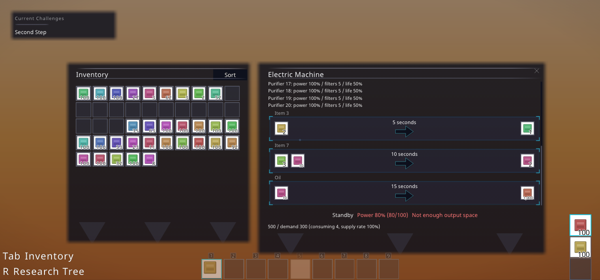
実DOM・wire JSON
english-20-720-inventory
実DOM・wire JSON
english-20-720-selection
実DOM・wire JSON
english-30-1080-inventory
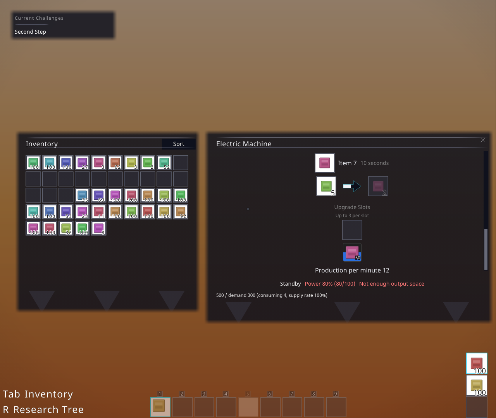
実DOM・wire JSON
english-30-1080-selection
実DOM・wire JSON
english-30-600-inventory
実DOM・wire JSON
english-30-600-selection
実DOM・wire JSON
english-30-720-inventory
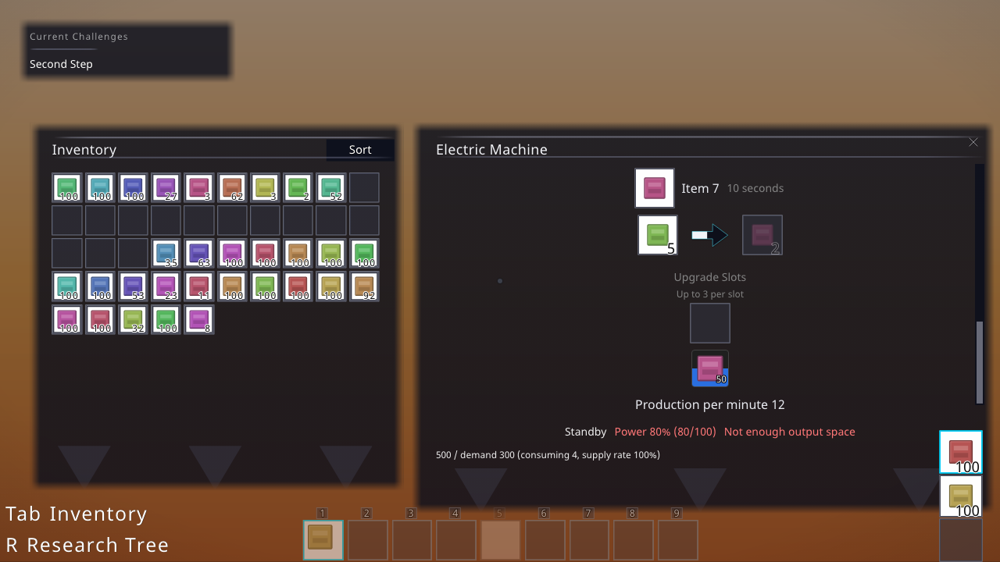
実DOM・wire JSON
english-30-720-selection
実DOM・wire JSON
german-20-1080-inventory
実DOM・wire JSON
german-20-1080-selection
実DOM・wire JSON
german-20-600-inventory
実DOM・wire JSON
german-20-600-selection
実DOM・wire JSON
german-20-720-inventory
実DOM・wire JSON
german-20-720-selection
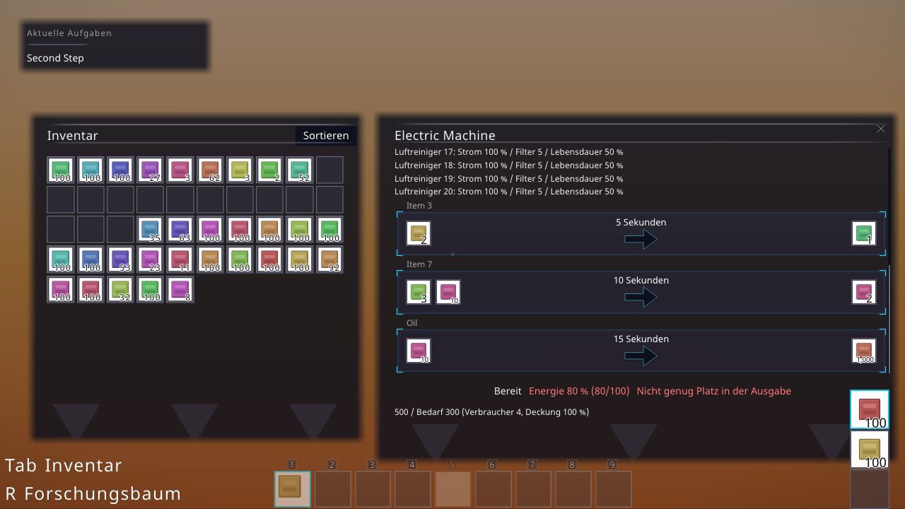
実DOM・wire JSON
german-30-1080-inventory
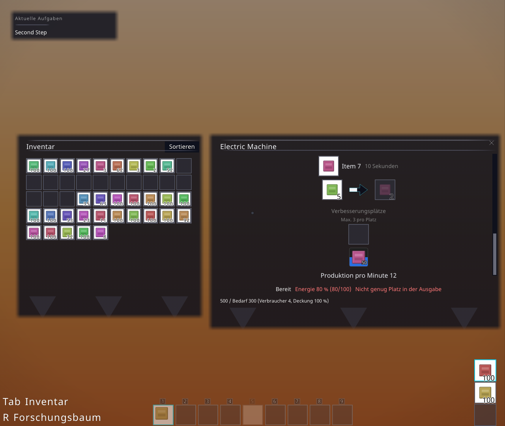
実DOM・wire JSON
german-30-1080-selection
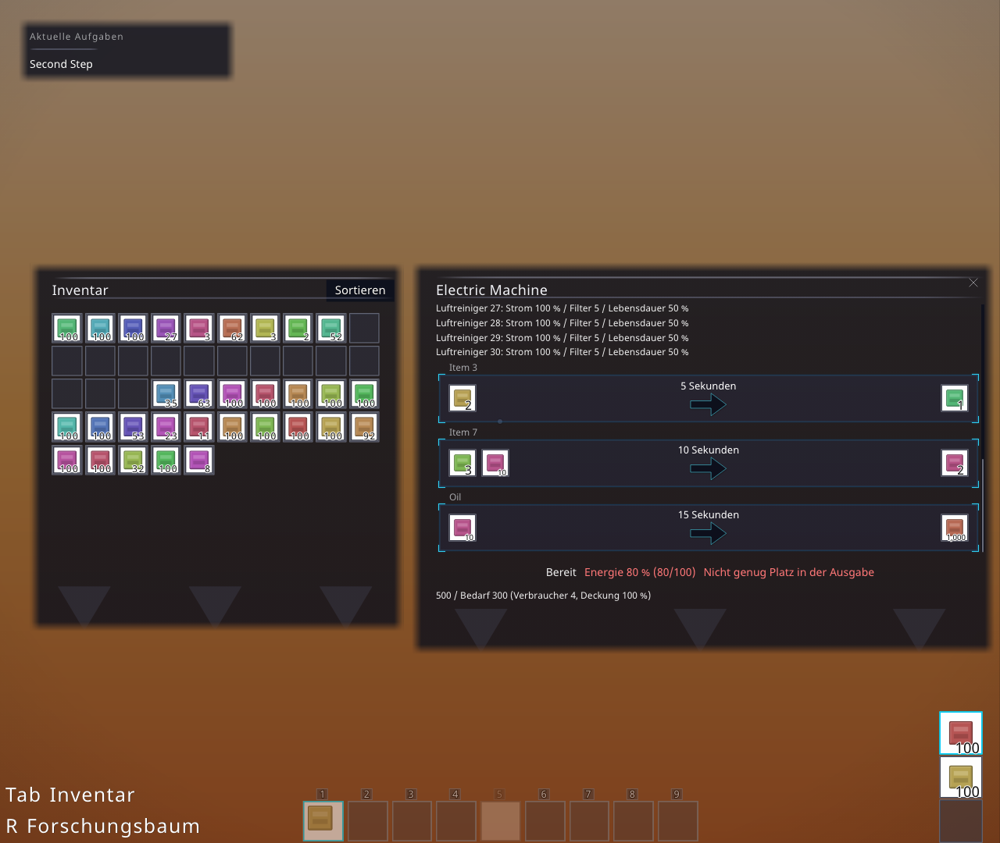
実DOM・wire JSON
german-30-600-inventory
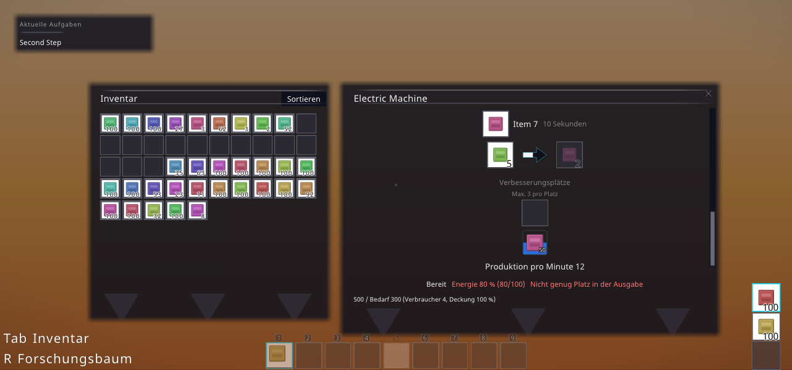
実DOM・wire JSON
german-30-600-selection
実DOM・wire JSON
german-30-720-inventory
実DOM・wire JSON
german-30-720-selection
実DOM・wire JSON
japanese-20-1080-inventory
実DOM・wire JSON
japanese-20-1080-selection
実DOM・wire JSON
japanese-20-600-inventory
実DOM・wire JSON
japanese-20-600-selection
実DOM・wire JSON
japanese-20-720-inventory
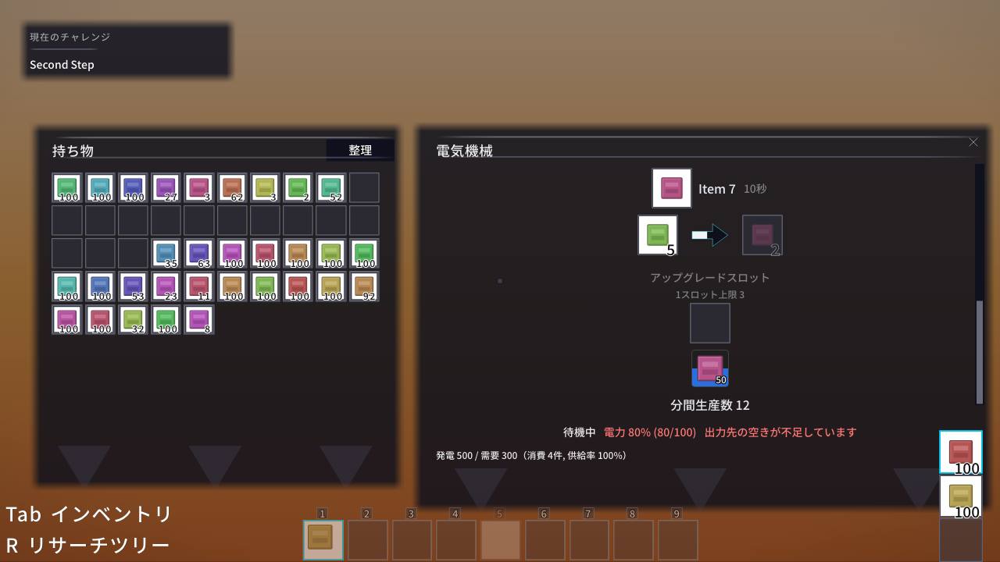
実DOM・wire JSON
japanese-20-720-selection
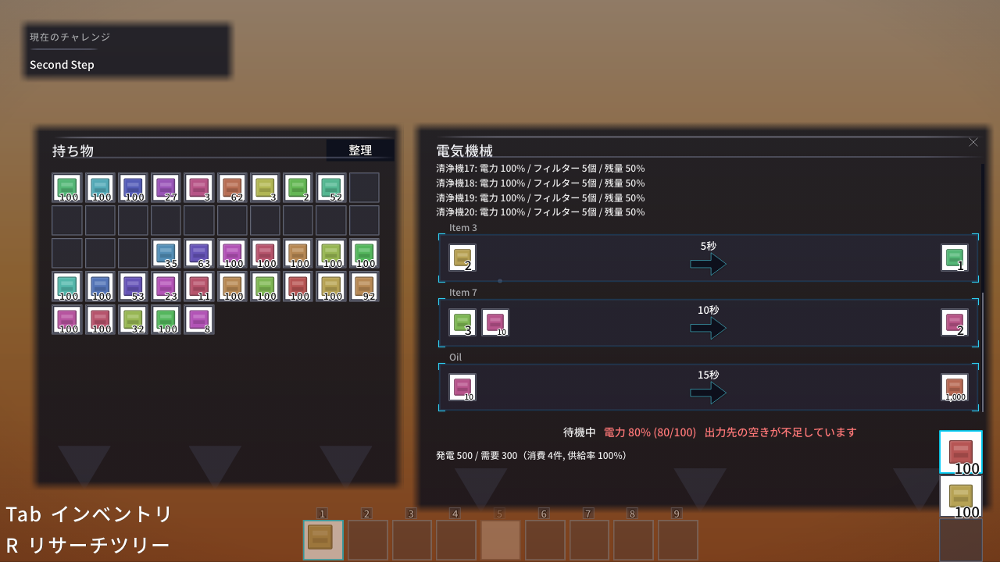
実DOM・wire JSON
japanese-30-1080-inventory
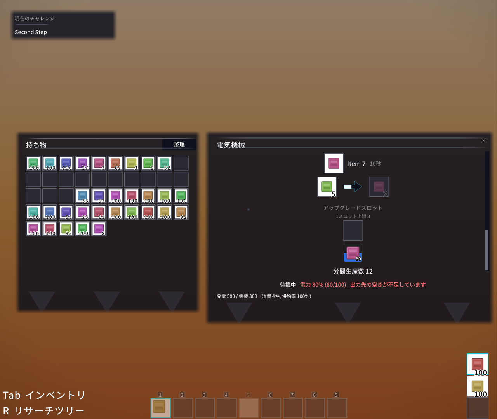
実DOM・wire JSON
japanese-30-1080-selection
実DOM・wire JSON
japanese-30-600-inventory
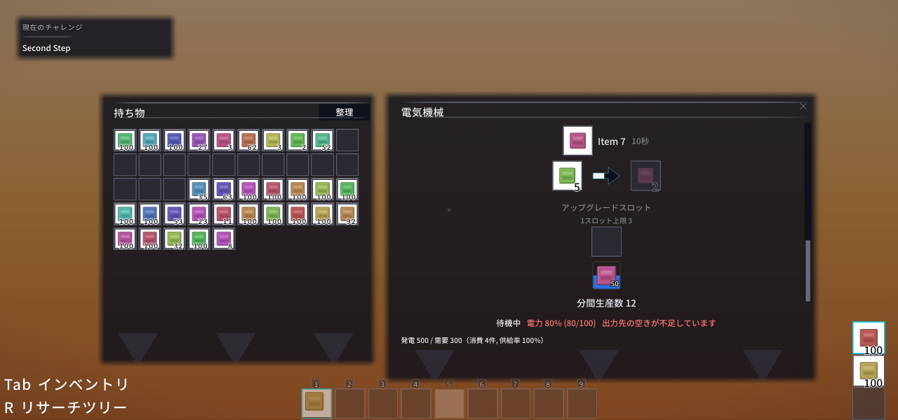
実DOM・wire JSON
japanese-30-600-selection
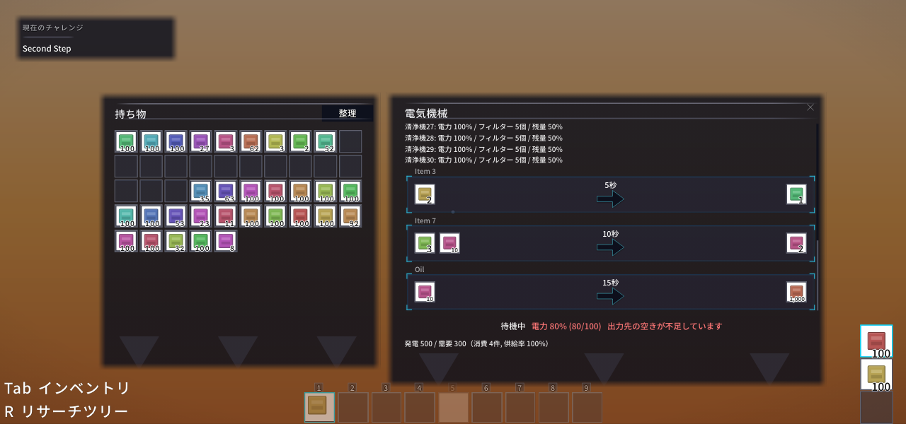
実DOM・wire JSON
japanese-30-720-inventory
実DOM・wire JSON
japanese-30-720-selection
実DOM・wire JSON
korean-20-1080-inventory
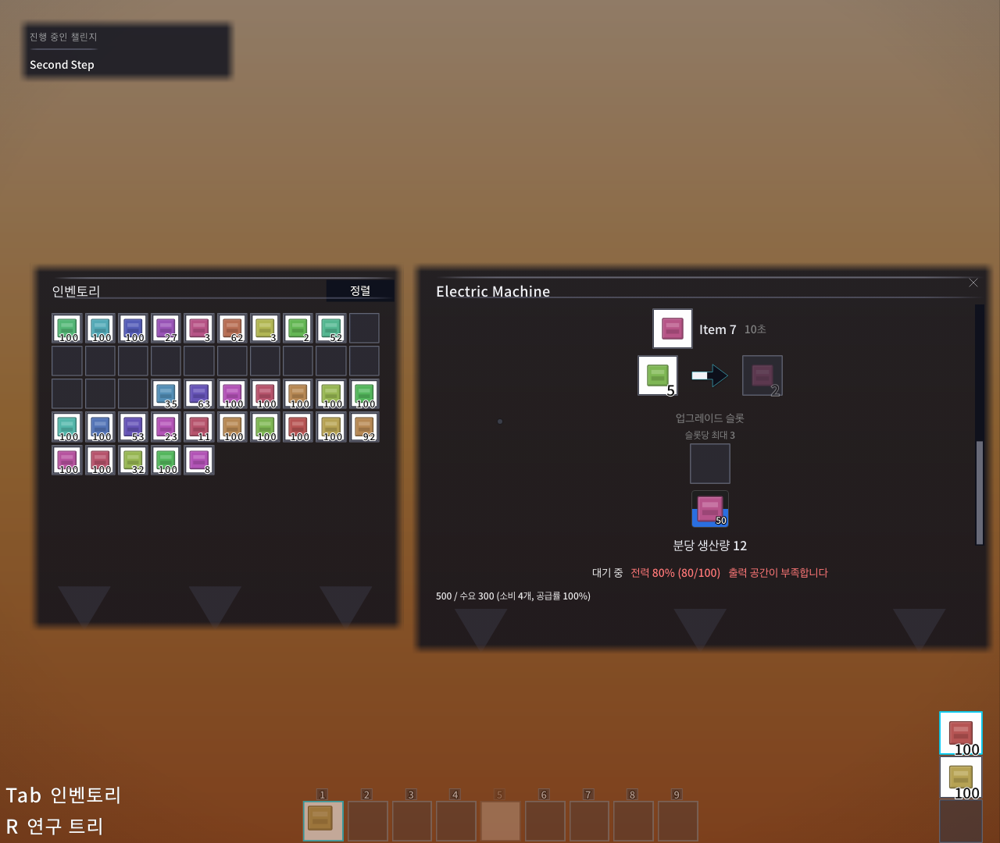
実DOM・wire JSON
korean-20-1080-selection
実DOM・wire JSON
korean-20-600-inventory
実DOM・wire JSON
korean-20-600-selection
実DOM・wire JSON
korean-20-720-inventory
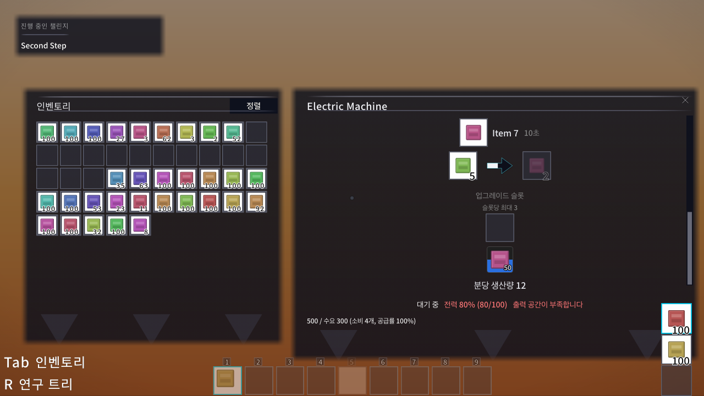
実DOM・wire JSON
korean-20-720-selection
実DOM・wire JSON
korean-30-1080-inventory
実DOM・wire JSON
korean-30-1080-selection
実DOM・wire JSON
korean-30-600-inventory
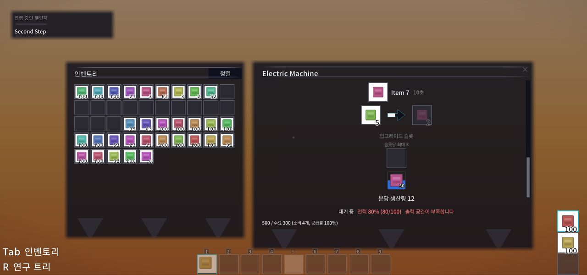
実DOM・wire JSON
korean-30-600-selection
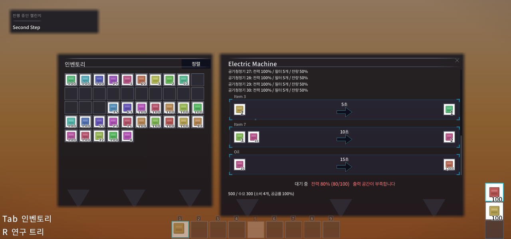
実DOM・wire JSON
korean-30-720-inventory
実DOM・wire JSON
korean-30-720-selection
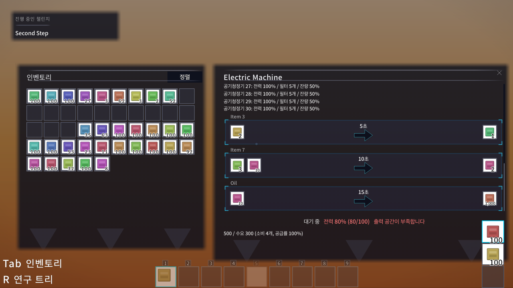
実DOM・wire JSON